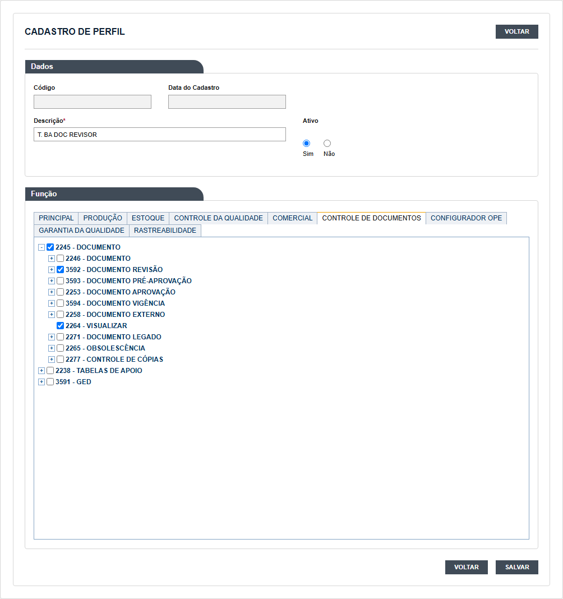
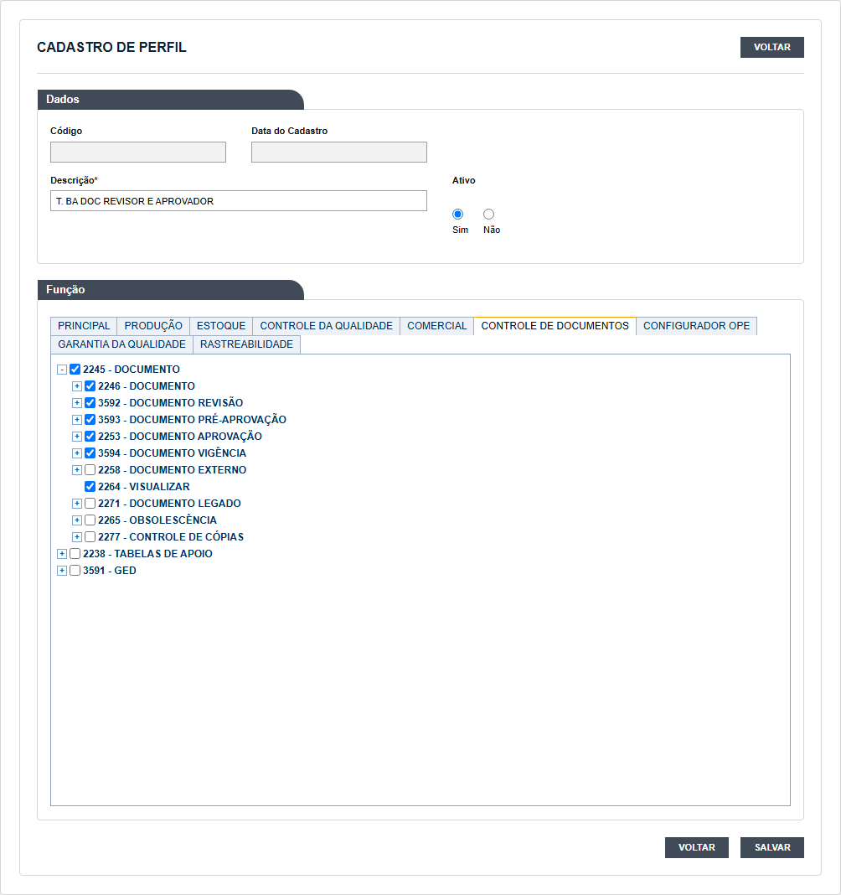
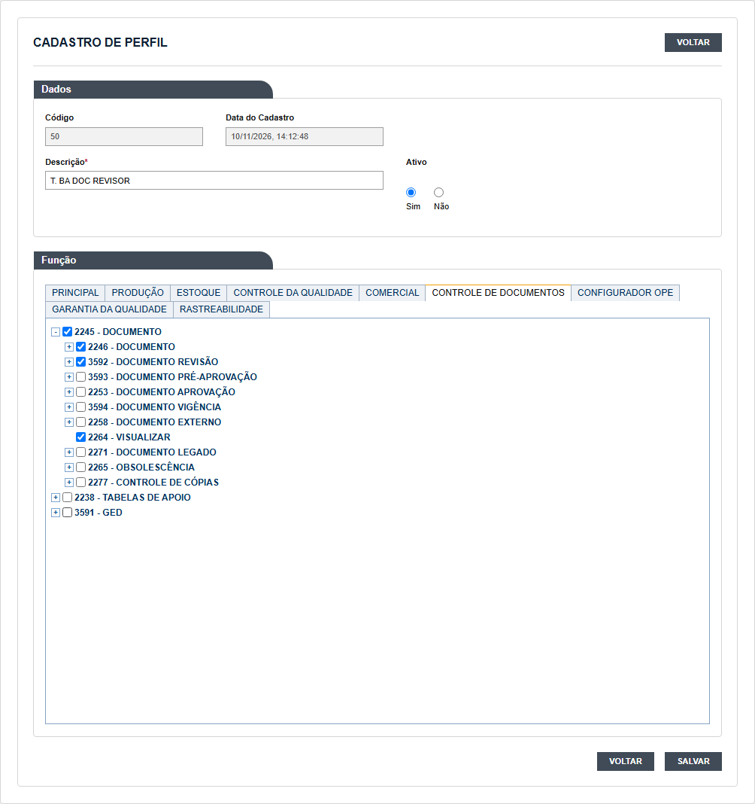
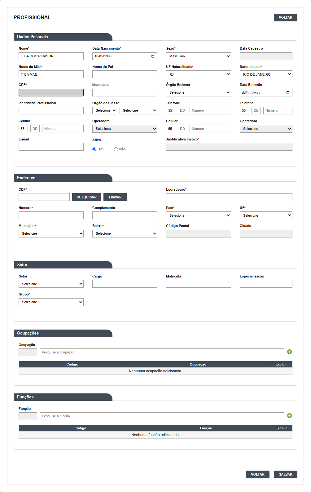
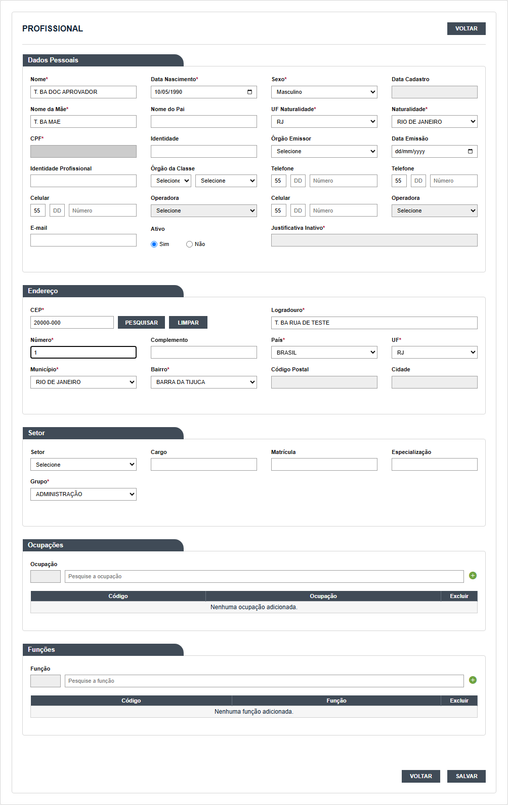
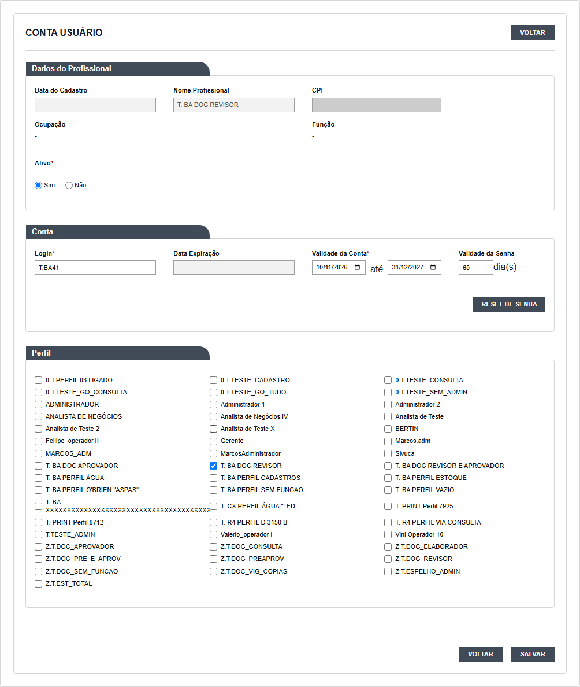
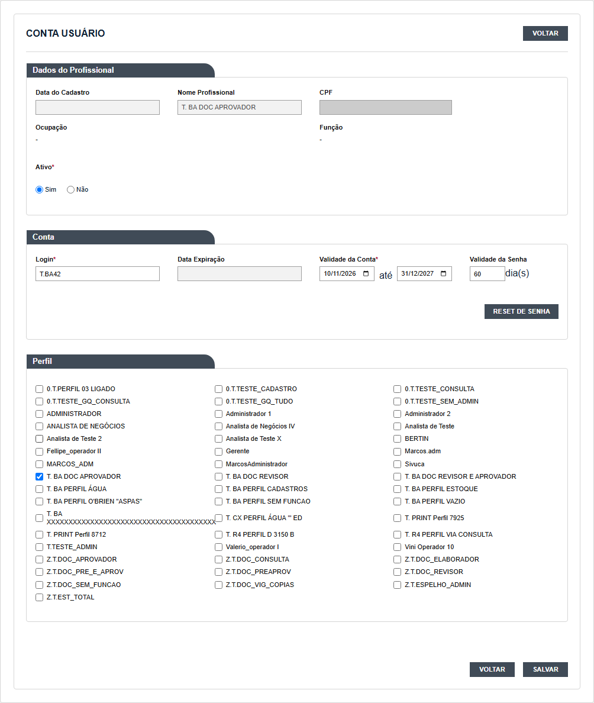
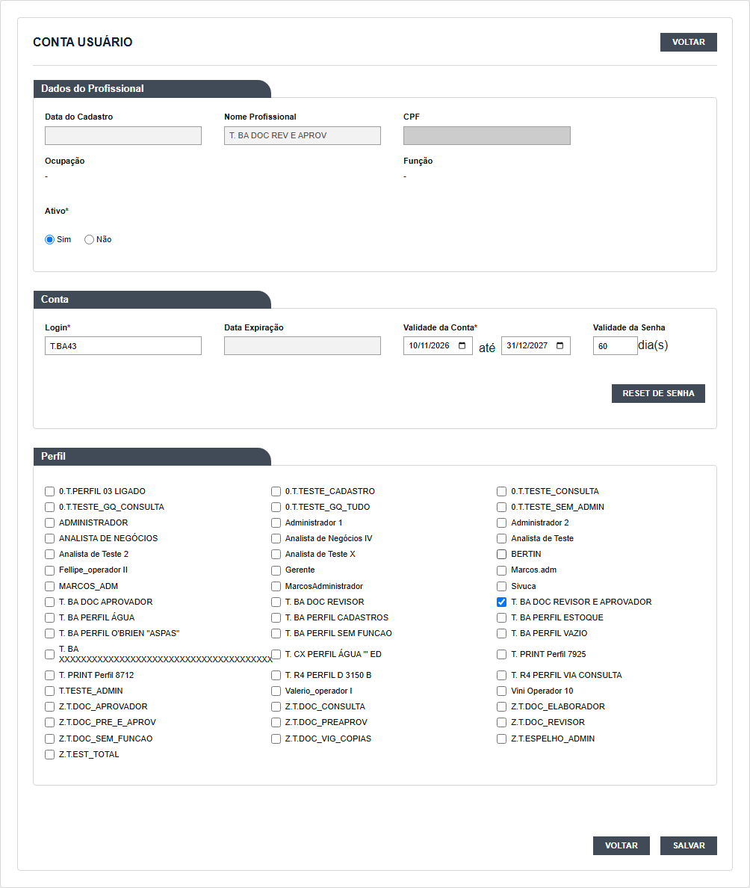

Menu: Administração (telas Profissional, Perfil e Conta usuário, do módulo Principal, usadas aqui para dar a cada pessoa um papel no Controle de Documentos) · Situação do manual: Em ajuste · Fonte dos prints: versão nova.
Este manual não descreve uma tela nova. Ele mostra como o administrador monta, nas telas do Principal, os papéis do ciclo do documento (elaborar, revisar, pré-aprovar, aprovar, pôr em vigor) e o que cada papel consegue gravar hoje. Os detalhes de cada tela do Principal estão nos manuais próprios:
homologacao/versao-nova/1.principal/paginas/administracao/01-profissional/manual.md,.../02-conta-usuario/manual.mde.../03-perfil/manual.md.
Para que serve
No Controle de Documentos, quem pode fazer cada etapa é definido por funções marcadas no Perfil (aba "CONTROLE DE DOCUMENTOS"), e o perfil é entregue a uma pessoa pela Conta usuário, que por sua vez nasce do Profissional. A separação de funções que a norma exige (quem elabora não aprova o que elaborou; análise crítica independente; Guia 33/2020) depende dessa montagem.
Antes de começar (o que precisa existir)
| O que precisa existir | Para quê | Onde se cadastra |
|---|---|---|
| Setores (áreas) | Setor e grupo do profissional | Cadastros > Estrutura funcional |
| Perfil com as funções do Controle de Documentos | Define o papel | Administração > Perfil |
| Profissional (pessoa) | A conta é ligada a ele | Administração > Profissional |
| Conta usuário com o perfil escolhido | Dá o acesso | Administração > Conta usuário |
Passo a passo
- Criar o perfil do papel. Em Administração > Perfil, clique em Incluir, escreva a Descrição* (por exemplo "T. BA DOC REVISOR") e abra a aba CONTROLE DE DOCUMENTOS da área Função. A árvore tem o grupo 2245 - DOCUMENTO com as telas 2246 - DOCUMENTO (elaboração), 3592 - DOCUMENTO REVISÃO, 3593 - DOCUMENTO PRÉ-APROVAÇÃO, 2253 - DOCUMENTO APROVAÇÃO, 3594 - DOCUMENTO VIGÊNCIA, 2258 - DOCUMENTO EXTERNO, 2264 - VISUALIZAR, 2271 - DOCUMENTO LEGADO, 2265 - OBSOLESCÊNCIA e 2277 - CONTROLE DE CÓPIAS, e, fora dele, 2238 - TABELAS DE APOIO e 3591 - GED. Marque as funções do papel e clique em SALVAR.
Revisor (só revisão e visualização):

A imagem mostra o perfil "T. BA DOC REVISOR" com a aba CONTROLE DE DOCUMENTOS aberta e marcados 2245 - DOCUMENTO, 3592 - DOCUMENTO REVISÃO e 2264 - VISUALIZAR.
Aprovador (pré-aprovação, aprovação, vigência e visualização):
A imagem mostra o perfil "T. BA DOC APROVADOR" com marcados 3593 - PRÉ-APROVAÇÃO, 2253 - APROVAÇÃO, 3594 - VIGÊNCIA e 2264 - VISUALIZAR.
Revisor e aprovador (todas as etapas):

A imagem mostra o perfil "T. BA DOC REVISOR E APROVADOR" com marcados Documento, Revisão, Pré-Aprovação, Aprovação, Vigência e Visualizar.
- O papel só grava se tiver também a função "Documento". Nos testes, os perfis só de revisão ou só de aprovação deram "Ocorreu um erro inesperado." (403) ao assinar. Foi preciso acrescentar a função 2246 - DOCUMENTO (elaboração) a cada perfil (DV-DOC-N-008):

A imagem mostra o perfil do revisor já salvo (código 50), agora com 2246 - DOCUMENTO marcado além de Revisão e Visualizar.
A imagem mostra o perfil do aprovador já salvo (código 51), com 2246 - DOCUMENTO marcado além das três etapas e Visualizar.
- Cadastrar o profissional. Em Administração > Profissional, inclua a pessoa com os dados pessoais, endereço (CEP, logradouro, número, país, estado, município e bairro são obrigatórios) e setor e grupo. Se faltar o endereço, a tela recusa e lista o que falta (por exemplo "O CEP do profissional é obrigatório/inválido." e "O logradouro do profissional é obrigatório.").

A imagem mostra o profissional "T. BA DOC REVISOR" com os dados pessoais preenchidos e o quadro Endereço ainda vazio (o CPF aparece tarjado).
A imagem mostra o mesmo cadastro com endereço (CEP, logradouro, número, município e bairro), setor e grupo, pronto para salvar.
Outros dois profissionais do ciclo:

A imagem mostra o profissional "T. BA DOC APROVADOR" preenchido, com endereço, setor e grupo.
A imagem mostra o profissional "T. BA DOC REV E APROV" preenchido, com endereço, setor e grupo.
- Criar a conta com o perfil. Em Administração > Conta usuário, escolha o profissional, defina o Login, a validade da conta e da senha e marque o perfil na lista Perfil. Ao salvar, a senha provisória aparece na tela do administrador ("Inclusão realizada com sucesso! Senha: ..."; ela não deve ser copiada para documentos). No primeiro acesso a pessoa vê Alterar senha ("Sua senha precisa ser atualizada para continuar.") e troca a senha. Se a nova senha se perder, o botão RESET DE SENHA gera outra provisória ("Confirma o reset de senha?").

A imagem mostra a Conta usuário do profissional "T. BA DOC REVISOR", login T.BA41, validade da conta e da senha (60 dias) e, na lista Perfil, só "T. BA DOC REVISOR" marcado.

A imagem mostra a conta T.BA42, do profissional "T. BA DOC APROVADOR", com o perfil "T. BA DOC APROVADOR" marcado.

A imagem mostra a conta T.BA43, do profissional "T. BA DOC REV E APROV", com o perfil "T. BA DOC REVISOR E APROVADOR" marcado.
- Conferir o resultado no ciclo. A conta de papel entra, vê no menu DOCUMENTO só as telas das suas funções e tenta a etapa. O resultado de cada papel está na tabela "O que cada papel consegue gravar".
Ícones e botões da lista
Ver os manuais de Perfil, Profissional e Conta usuário (lápis para editar, VerLog, RESET DE SENHA na edição da conta).
Botões e ações
| Botão | Tela | O que faz |
|---|---|---|
| Incluir, SALVAR, VOLTAR | Perfil, Profissional, Conta usuário | Inclui e grava o cadastro |
| RESET DE SENHA | Conta usuário | Gera nova senha provisória ("Confirma o reset de senha?", "Operação realizada com sucesso! Senha: ...") |
Mensagens do sistema
| Mensagem | Quando aparece |
|---|---|
| Confirma a inclusão do item? / Inclusão realizada com sucesso! | Criação de perfil, profissional e conta |
| Inclusão realizada com sucesso! Senha: ... | Criação da conta (a senha provisória aparece na tela do administrador) |
| Alterar senha / Sua senha precisa ser atualizada para continuar. | Primeiro acesso |
| A senha está incorreta, você tem mais 3 tentativa(s) antes de sua conta ser bloqueada. | Senha provisória errada ou já trocada |
| Confirma o reset de senha? / Operação realizada com sucesso! | Reset de senha |
| Usuário sem módulos de acesso. | Login de perfil sem nenhuma função |